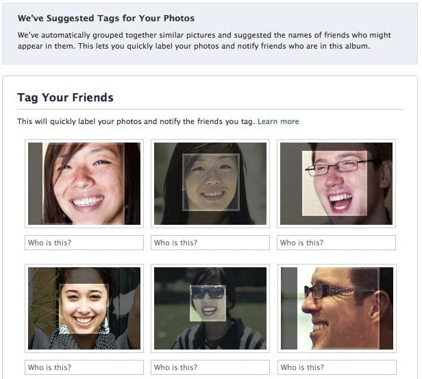
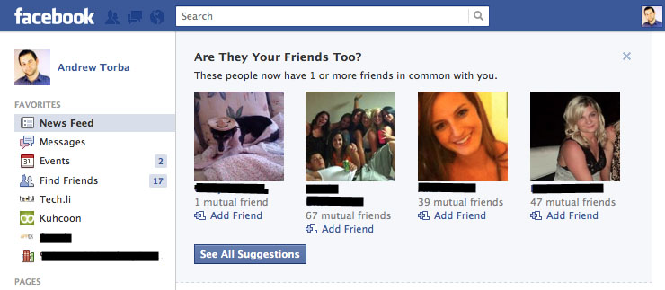

The internet is a wild frontier of products and services desperate to extract as much human attention as they can from their users. The world’s most valuable resources were once gold and oil, but now markets are dominated by human attention and the data it generates. To illustrate this fact, I want to analyze many of Facebook’s design choices and ask whether these choices provide a service to the customer or extract value from them.
If you’ve posted to Facebook before, you’ll know that the site constantly pushes for you to tag people in the picture. It’s important to note here that the service will rarely ask for you to tag the pictures manually, rather it automatically tags your friends and asks you to confirm. If you accept these recommendations, the people you tag will receive a notification stating that you in fact tagged them. Facebook didn’t set up this mention to drag your friend into the service, you did it organically and now your tagged friends are pulled in.
This design pattern is rampant on the web, particularly on Facebook. Facebook tries to make the manipulated behavior of their users seem like intentional and organic behavior. For instance, when you receive a friend request, it is framed as that person making a concerted effort to find you, notice you, and try to talk with you. The reality on Facebook, however, is that friend requests come from algorithmically generated suggestions that are fed to you at every turn. How often do we consciously search a name or consciously look for a person’s page versus having it fed to us by recommendations?
Facebook does have many legitimate uses, particularly when it comes to scheduling events. Their network, by virtue of its size, does help people advertise events and find interesting events going on around them. The caveat to this and many of their useful services is that they never provide a direct link to them. You cannot navigate to events without first being forced to look at your feed where an enticing post can suck you into a 20 minute rabbit hole of recommendations. What were you even looking for again? Much like how a grocery store wouldn’t put the most popular items at the front of the store, Facebook is going to put the most popular features behind their feeds and recommendation traps so that they have every opportunity to pull you in.
It’s important to note that the Facebook feed doesn’t end. When they have your attention, they play to keep it by serving endless posts, videos, advertisements, and curated content. Each piece of content is uniquely tailored to your interests and data. The bottom of the bottle is removed and infinitely far away: you can drink until you’re sick.
Facebook’s manipulative design choices are innumerable. However, the engineers behind the software are not cruel. They move with the status quo of the web. Software in its current state has to infinitely grow user bases by preying on the flaws in our psychology. It doesn’t have to be this way. Software can be motivated by values and place stock into human agency and privacy. I challenge you as a designer and consumer to think about the ethics involved in the products and services you use every day.